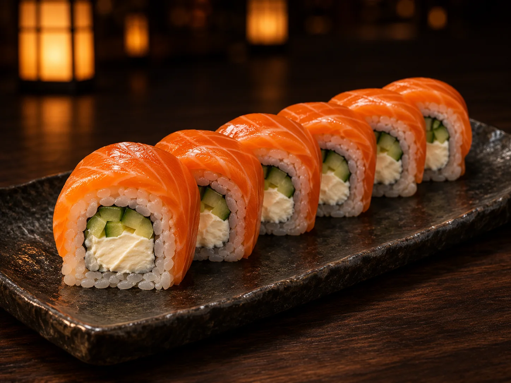
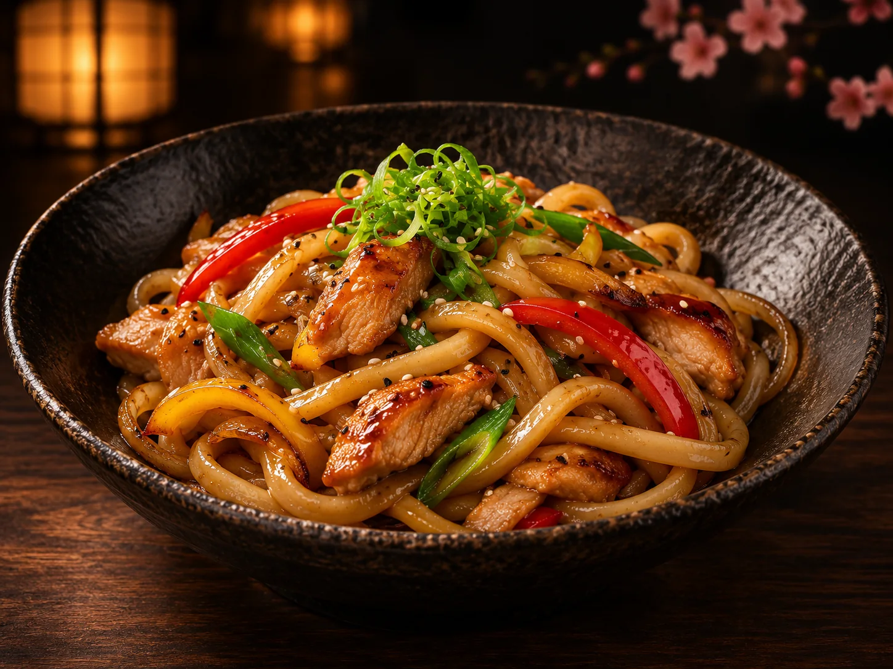
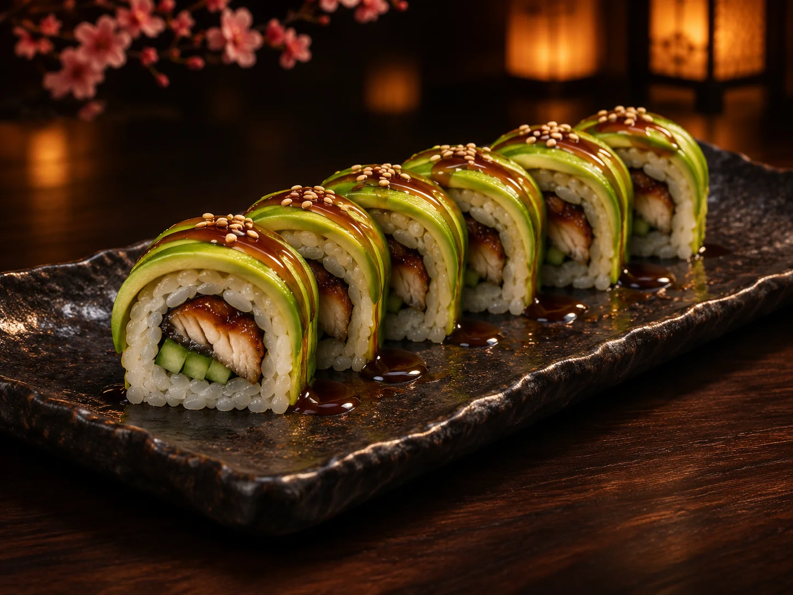
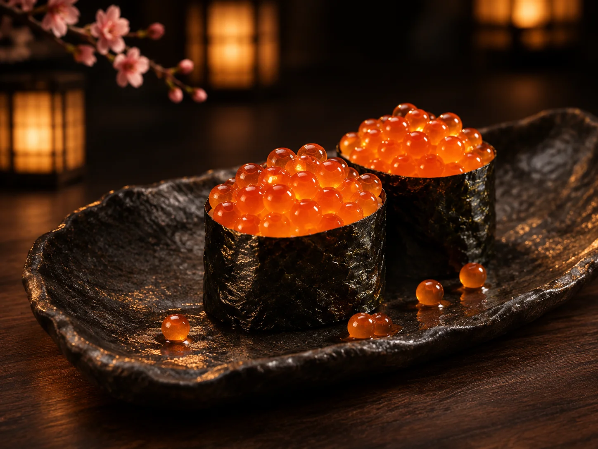
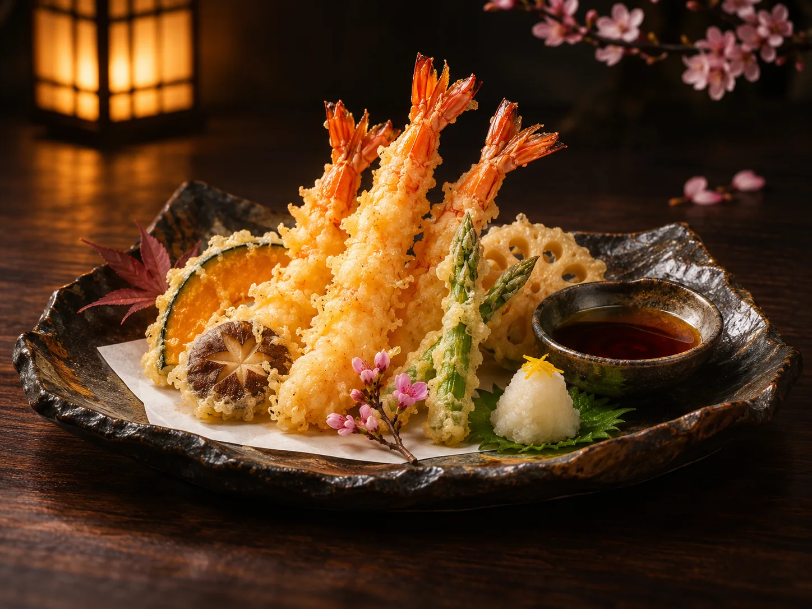
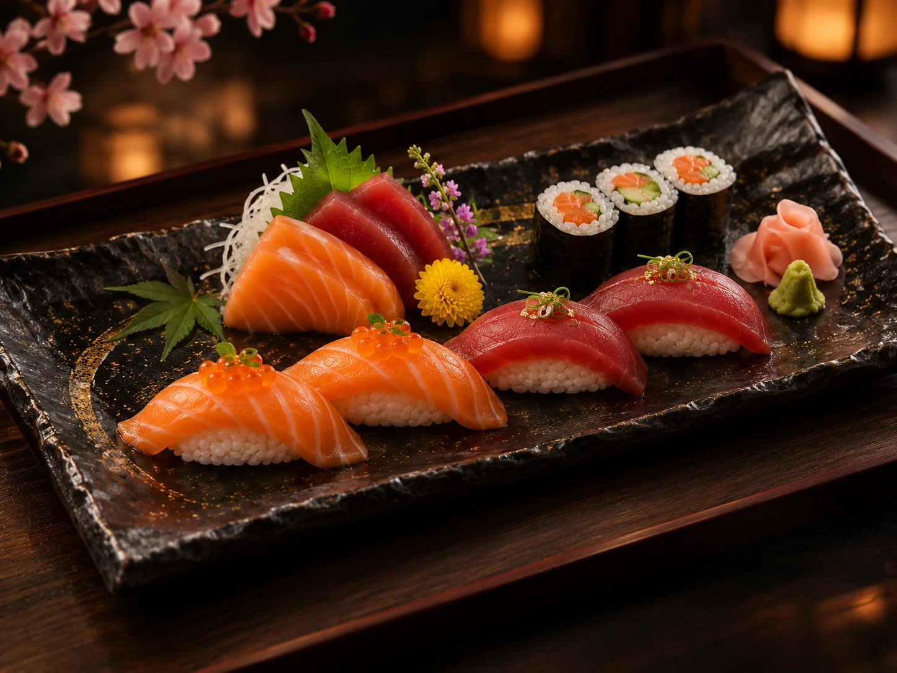
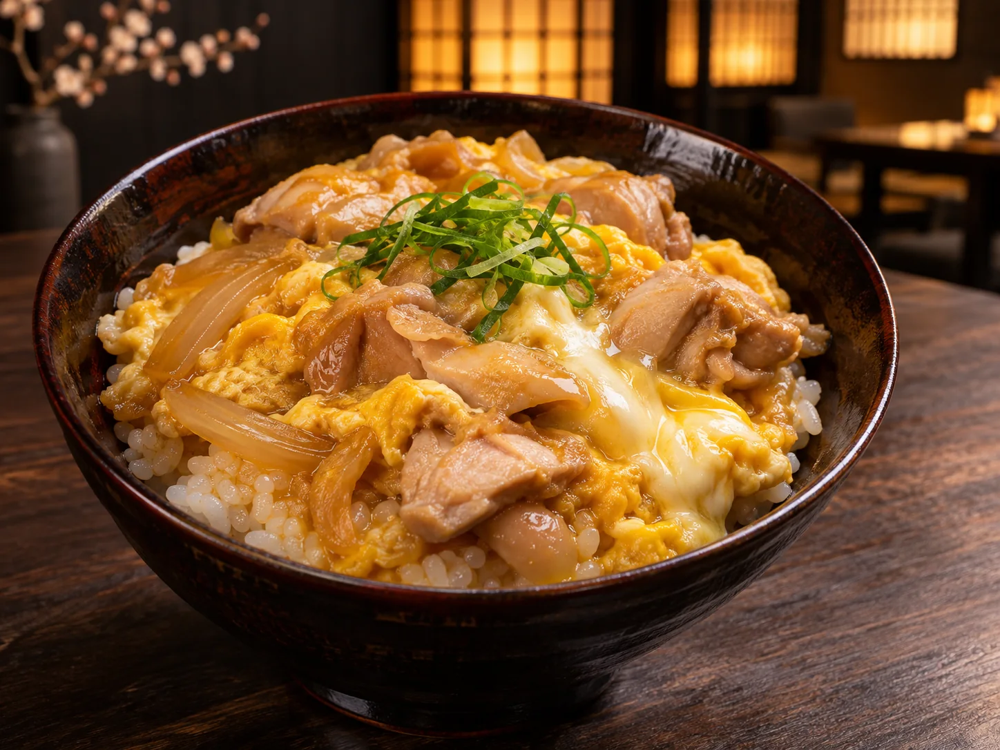
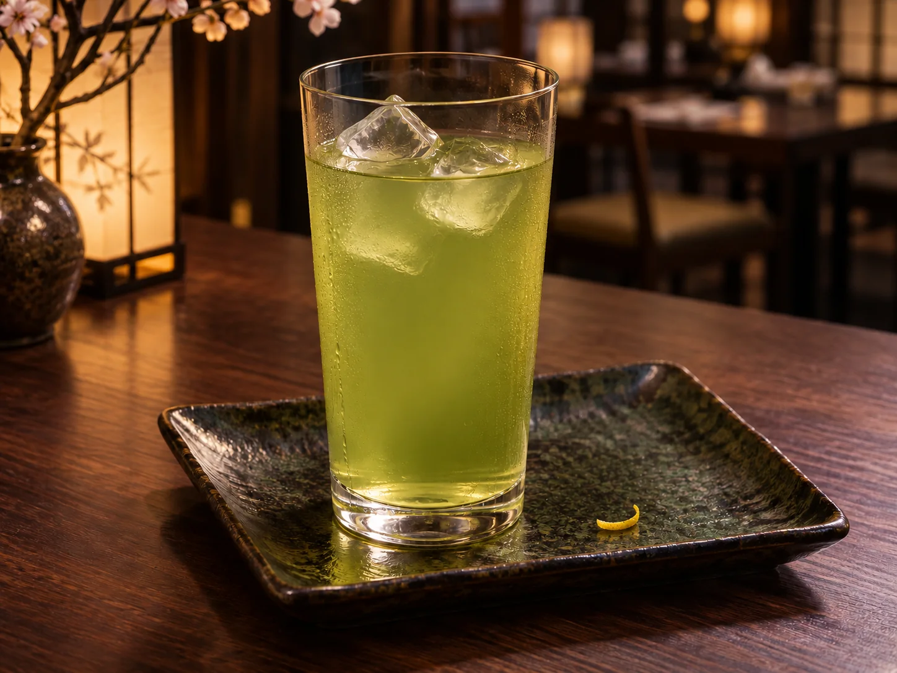

Роллы · 280 г
Филадельфия
Нежный лосось, сливочный сыр, огурец, рис, нори.
4 500 ₸
Выберите формат и составьте сет из каталога. В статической демоверсии состав и стоимость — предварительная локальная оценка без серверной проверки.
Выберите от 5 до 8 разных позиций. Общее количество не выше 12 порций.

Нежный лосось, сливочный сыр, огурец, рис, нори.

Классические нигири с лососем.

Японский чай матча на кокосовом молоке.

Говяжий бульон, лапша, говядина и яйцо адзитама.

Рисовое тесто с ягодной начинкой.

Тунец ахи, понзу с юдзу, зелёное яблоко и хрустящий рис — прохладная закуска с чистым цитрусовым финалом.

Светлый бульон даси, паста сира-мисо, тофу, вакаме и зелёный лук.

Снежный краб, авокадо, огурец, икра тобико, рис.

Нигири с тунцом.

Пшеничная лапша удон, курица и овощи в соусе терияки.

Тонкое тесто, томлёная утка, имбирь и кунжутное масло. Подаём с соусом понзу собственного состава.

Крем маскарпоне, савоярди с ходзича и пудра из церемониальной матчи.

Домашняя цитрусовая основа юдзу, содовая и тонкая нота свежего имбиря.

Копчёный угорь, авокадо, сливочный сыр, соус унаги, кунжут.

Рис и нори, наполненные икрой лосося.

Тигровые креветки в лёгком тесте, сезонные овощи и тэнцую с дайконом.

Лосось, огурец и сливочный сыр под шапкой из соуса спайси.

Рис косихикари, угорь с глазурью кабаяки, тамаго и маринованный дайкон.

Сладкий морской гребешок, слегка обожжённый снаружи, на рисе для суши; цитрусовый акцент юдзу.

Двадцать четыре кусочка: лосось, тунец, креветка и два фирменных ролла.
Обжаренный японский чай ходзича с молоком и лёгкой карамельной нотой.

Тридцать два кусочка с лососем, угрём и сезонным роллом для компании.
Лосось, авокадо, огурец и рис в лёгком урамаки с кунжутом.
Плотное, деликатное филе хамачи на тёплом рисе для суши.
Молодые соевые бобы на пару с морской солью и цедрой лайма.
Плотный бульон тонкоцу, лапша, яйцо адзитама, нори и зелёный лук.
Удон, тонкие ломтики говядины, шиитаке и бульон на соевом соусе.
Двенадцать нигири из лосося, тунца, хамачи, креветки и морского гребешка.
Мягкие блинчики дораяки и крем на основе матча с белым шоколадом.
Тунец, огурец и мягкий спайси-соус; остроту уравновешивают кунжут и рис.
Угорь кабаяки на рисе, с каплей унаги и белым кунжутом.
Пять горячих шариков с осьминогом, имбирём и стружкой бонито.
Бульон даси, лосось, тофу, вакаме и паста сира-мисо.
Куриное бедро в лёгкой хрустящей панировке, лимон и домашний соус.
Сливочный чизкейк с цедрой юдзу и тонким песочным основанием.
Копчёный угорь, авокадо и огурец с тонкой глазурью кабаяки.
Тонко нарезанный тунец с дайконом, васаби и соевым соусом отдельно.
Баклажан, запечённый под глазурью мисо, с кунжутом и зелёным луком.
Запечённый лосось под глазурью терияки, рис и маринованный дайкон.
Нежное моти из крахмала вараби, пудра кинако и сироп куромицу.
Хрустящая креветка темпура, авокадо и соус понзу в нори и рисе.
Нежный лосось, дайкон и свежий цитрусовый акцент юдзу.
Морские водоросли вакаме, огурец и рисовый уксус с кунжутом.
Рис, тонкие ломтики говядины вагю, яйцо, лук и соус сукияки.
Авокадо, огурец, зелёный лук и кунжут — лёгкая растительная подача.
Хрустящая тобико в оболочке из нори на рисе с деликатной нотой юдзу.
Креветка и сезонные овощи в тонком кляре с тэнцую и дайконом.
Краб, японский майонез и лёгкий спайси-соус в нори.

Нежная курица и яйцо на рисе косихикари с луком и соусом на основе сои.

Зелёный чай сенча, юдзу и лёгкая сладость; подаём охлаждённым.